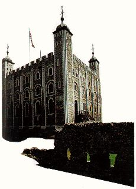

Achevée en 1100, son architecture est d'inspiration normande. La chapelle intérieure, St John's Chapel est de style roman. Les quatres tourelles sont de style gothique et coiffées de dômes d'inspiration byzantine au XVIIe siècle. La plus célèbre des forteresses britanniques a son lot d'apparitions célèbres.
Décapitée sous l'accusation d'adultère par un bourreau venu spécialement de France, le , Anne Boleyn, exécutée 1000 jours après avoir épousé Henri VIII, est la 2ᵉ des 6 épouses et la première victime du roi qui inspira la sinistre légende de Barbe-Bleue. Après l'exécution, sa dépouille est enterrée à la hâte dans la chapelle Saint-Pierre, à la Tour de Londres, où elle est restée prisonnière. Dès lors, et pendant des siècles - la dernière apparition remonterait à - son spectre apparaît à intervalles réguliers, parfois conduisant une procession dans la chapelle Saint-Pierre ou, seule, dans d'autres endroits de la vieille forteresse.
Une des plus impressionnantes manifestations du fantôme se produit toutefois dans l'hiver 1864. Une nuit, une sentinelle est retrouvée inconsciente. Accusé de s'être endormi à son poste, l'homme comparaît devant un tribunal militaire. Il raconte que, vers l'aube, il a vu sortir du brouillard une silhouette blanche. Un bonnet la surmontait, sans tête en dessous, et elle se dirigeait vers lui. Après avoir fait les 3 sommations d'usage, le soldat s'est approché de la forme ; mais, 1orsque la baïonnette de son fusil a traversé celle-ci. un éclair s'est propagé le long du canon et lui-même s'est retrouvé assommé par le choc. Tout cela ressemblerait à une excuse bien trouvée si 2 autres soldats ainsi que 1 officier ne témoignaient, après la déposition de l'accusé, avoir eux aussi aperçu le spectre par une fenêtre. Lorsqu'il s'avère que la forme, dans les 4 cas, a été vue juste sous l'ouverture de la pièce dans laquelle Anne Boleyn avait passé sa dernière nuit avant son exécution, le tribunal choisit de relaxer la sentinelle.
Le long passé de prison d'Etat de la Tour et la qualité de nombre de ses détenus et des victimes exécutées entre ses murs font du bâtiment (construit par Guillaume le Conquérant à la fin du XIᵉ siècle) un véritable terrain de prédilection pour les fantômes.
De grandes dames du royaume, assassinées là, habiteraient ainsi le bâtiment, se promenant sur les remparts, longeant les couloirs, traversant les murs. Margaret, comtesse de Salisbury, par exemple, exécutée à l'âge de 70 ans dans des conditions atroces - le bourreau dut s'y reprendre à 3 fois pour la décapiter - "revivrait" périodiquement ses derniers moments sous les yeux horrifiés des gardes, seuls humains vivants à fréquenter les lieux pendant la nuit. Mais des hommes aussi hantent la Tour.
Le plus ancien fantôme est celui de saint Thomas Becket, assassiné en pleine messe dans la cathédrale de Canterbury en , et qui reviendrait quelquefois visiter la Tour dont il fut un temps gouverneur.
Un autre spectre illustre est celui du grand explorateur sir Walter Raleigh, emprisonné par Jacques 1er pour complot de , relâché 2 ans, puis de nouveau enfermé et décapité. Mais 2 enfants, le jeune prince Edouard V et son frère le duc d'York, tués par leur oncle Richard III , se promèneraient aussi quelquefois dans les couloirs, vêtus de robes blanches et se tenant par la main.
Un étrange exorcisme aurait présidé à la construction de cette forteresse et l'aurait protégée des fantômes.